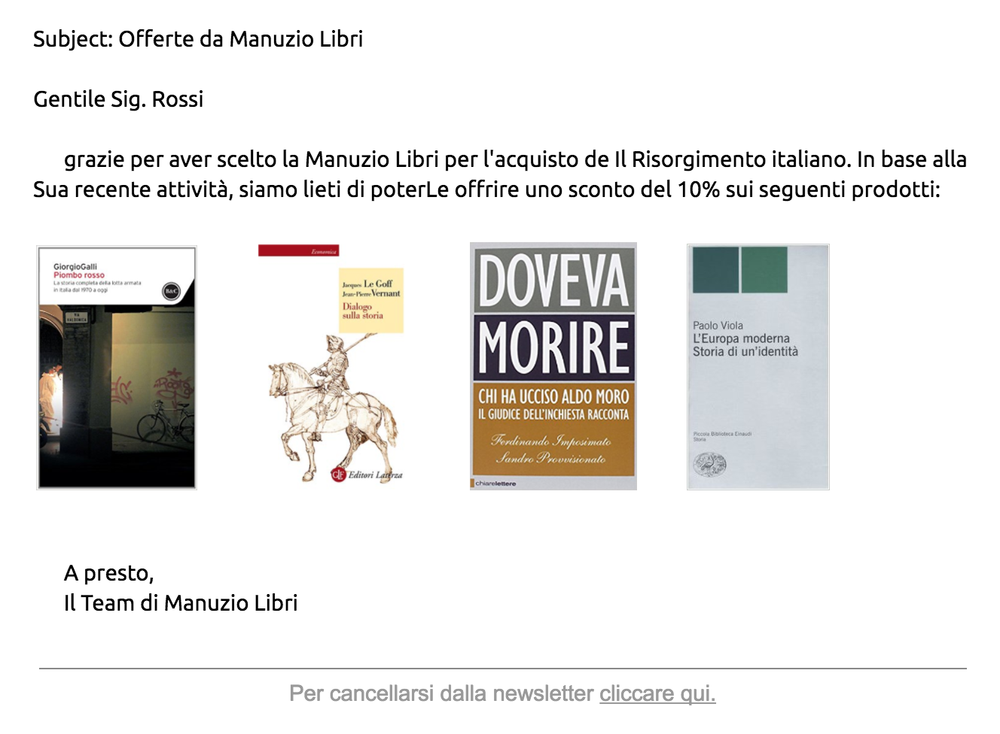

Email Marketing
Today, email remains the tool with the highest conversion.
In 2016, email generated 174% more conversion than Facebook and Twitter together.
But.
Information overflow is real in email more than anywhere else. Not only Internet Service Providers are very active in filtering senders, but mail clients are also very careful in inserting a message in the user's inbox and not in the Promotions Tab.
Granular personalization. The future of email
Calling by the name is not enough. The message must be truly personal, considering who the receiver is.
Personalization: more information for the user, clean inbox, higher reading and click rate. Which translates into ISP and mail clients recognizing the message as priority.
Reputation. Trust. Relationship.
What is ORAC
ORAC is a echosystem of algorithms, from Natural Language Processing to the analysis of each interaction the user has with the brand, aimed a generating highly personalized messages.
ORAC was born by elegans.io experience in the development of Artificial Intelligence systems in health and customer support. Two fields where no mistake is allowed.
Come si usa
The easiest way to use ORAC is through an Email Ser La maniera più facile per usare ORAC è servirsi un Email Service Provider partner --contattaci per sapere se il tuo ESP lo è.
Quando prepari il template per la tua Newsletter/Direct Email Marketing, non devi far altro che inserire i placeholders di ORAC. Per esempio:
{{ORAC.greeting}},
grazie per aver scelto la Manuzio Libri per l'acquisto de {{ORAC.purchase_history[0].name}}. In base alla {{ORAC.grammatical_person.2.possessive}} recente attività, siamo lieti di poter{{ORAC.grammatical_person.2.dative}} offrire uno sconto del 10% sui seguenti prodotti:
{{ORAC.surf_history[0].image}}
{{ORAC.recommended_items[0:3].image}}
A presto,
Il Team di Manuzio Libri
{banner}
{unsubscribe_footer}
Si tradurrà per l'utente Mario Rossi, di anni 76, che ha recentemente comprato vari libri di storia, e visitato la pagina di "Piombo Rosso" di Giorgio Galli, nel seguente messaggio:

Per una cliente giovane, ORAC (in base ai dati analizzati) probabilmente userebbe il "tu" invece del "Lei", e inizierebbe con un informale "Cara...".
Puoi iniziare ad usare ORAC da subito. Contattaci e vedremo insieme come caricare nel sistema, in forma anonimizzata, l'anagrafica clienti, il catalogo prodotti e le interazioni tra i due.
Se hai siti di e-commerce, potremo inoltre inserire all'interno di questi il codice JavaScript per il tracciamento in realtime
La tecnologia dietro ORAC
ORAC viene "allenato" (trained) osservando le interazioni utente-brand. Passate (e.g. web log e acquisti) e presenti (codice javascript nei siti).
Col tempo, nulla viene più lasciato al caso. Il soggetto: meglio "Offerta per te" o "Sconto imperdibile"? In apertura, meglioCaro Mario oppure Egregio sig. Rossi? Consigliare l'acquisto di pasta a grano duro o di cibo senza glutine?
Il messaggio, sulla base di un template, viene costruito per ogni utente in modo da massimizzare apertura e click rate. E soddisfazione da entrambe le parti. Il tutto scientificamente.